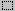

Per capovolgere o ruotare un'immagine o un oggetto
- Nella cassetta degli strumenti, fare clic su  Per selezionare un'area rettangolare o fare clic su Per selezionare un'area in forma libera.
- Trascina una scatola attorno all'articolo che si desidera capovolgere o ruotare.
- Nella parte inferiore della cassetta degli attrezzi, selezionare una delle seguenti:
- Sul Immagine Menu, clicca Capovolgere/ruotare.
- Fai clic sull'opzione che desideri.
Nota
- Puoi annullare qualsiasi numero di modifiche facendo clic Modificare menu e quindi fare clic Disfare per ogni cambiamento.